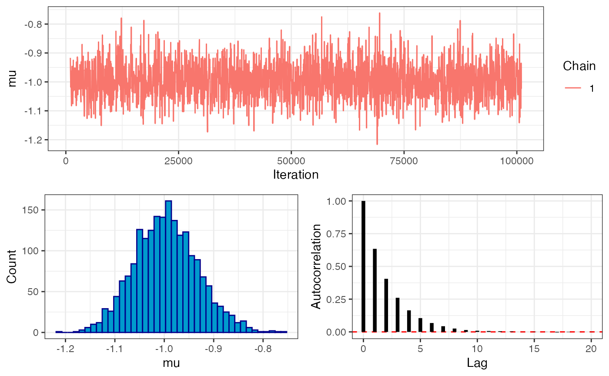

vignettes/checks_double_well.Rmd
checks_double_well.Rmd## Registered S3 method overwritten by 'GGally':
## method from
## +.gg ggplot2Purpose: to compare drjacoby results for a challenging problem involving a multimodal posterior, both with and without temperature rungs.
We assume a single parameter mu drawn from a double well
potential distribution, defined by the formula:
\[ \begin{aligned} \mu &\propto exp\left(-\gamma(\mu^2 - 1)^2\right) \end{aligned} \] where \(\gamma\) is a parameter that defines the strength of the well (higher \(\gamma\) leads to a deeper valley and hence more challenging problem). NB, there is no data in this example, as the likelihood is defined exactly by these parameters.
Likelihood and prior:
Parameters dataframe:
L <- 2
gamma <- 30
df_params <- define_params(name = "mu", min = -L, max = L,
name = "gamma", min = gamma, max = gamma)
mcmc <- run_mcmc(data = list(x = -1),
df_params = df_params,
loglike = "loglike",
logprior = "logprior",
burnin = 1e3,
samples = 1e5,
chains = 1,
rungs = 1,
silent = TRUE)
# trace plot
plot_trace(mcmc, show = "mu")
# extract posterior draws
output_sub <- subset(mcmc$output, phase == "sampling")
mu_draws <- output_sub$mu
# get analytical solution
x <- seq(-L, L, l = 1001)
fx <- exp(-gamma*(x^2 - 1)^2)
fx <- fx / sum(fx) * 1/(x[2]-x[1])
# overlay plots
hist(mu_draws, breaks = seq(-L, L, l = 201), probability = TRUE, main = "", col = "black")
lines(x, fx, col = 2, lwd = 2)
mcmc <- run_mcmc(data = list(x = -1),
df_params = df_params,
loglike = "loglike",
logprior = "logprior",
burnin = 1e3,
samples = 1e5,
chains = 1,
rungs = 11,
alpha = 2,
pb_markdown = TRUE)## MCMC chain 1
## burn-in
## | |======================================================================| 100%
## acceptance rate: 21.7%
## sampling phase
## | |======================================================================| 100%
## acceptance rate: 22%
## chain completed in 2.187709 seconds## total MCMC run-time: 2.19 seconds
# trace plot
plot_trace(mcmc, show = "mu")
# coupling acceptance plot
plot_mc_acceptance(mcmc)